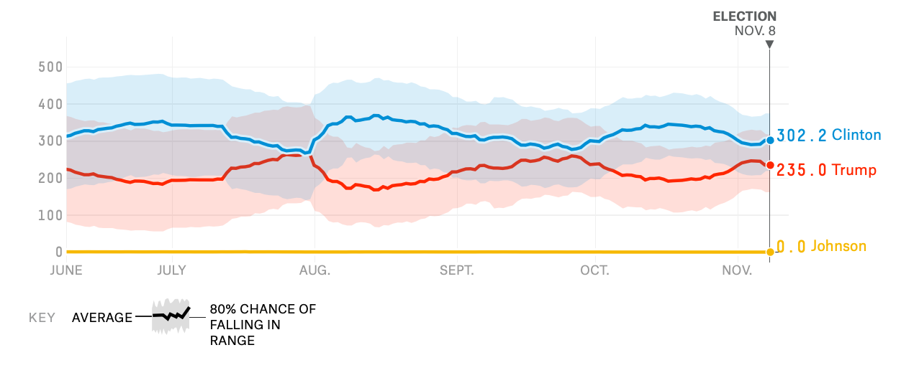

The ideas, and how to use the formulas: the standard error of a mean and of a regression slope, confidence intervals, t-statistics, what each OLS assumption buys you, and what "controlling for" does. The derivations are here so that you believe the results. You will not need to reproduce them.
You surveyed 400 customers and found an average spend of $45. How close is $45 to the average of all your customers?
We know the population. What samples are likely?
"A fair coin: how likely are 7 heads in 10 flips?"
We see a sample. What can we say about the population?
"7 heads in 10 flips: is the coin fair?"
| Quantity | Population (unknown) | Sample (computed) |
|---|---|---|
| mean | \(\mu_X\) | \(\bar X\) |
| variance | \(\sigma_X^2\) | \(s_X^2\) |
| covariance | \(\sigma_{XY}\) | \(s_{XY}\) |
| regression slope | \(\beta_1\) | \(\hat\beta_1\) |
| size | \(N\) (or \(\infty\)) | \(n\) |
Examples
Greek letters for population quantities, Latin letters or hats for their sample versions.
You will see both notations: a new letter (\(s_{XY}\) for \(\sigma_{XY}\)) or a hat on the parameter (\(\hat\sigma_{XY}\)).
In Python (pandas columns x, y):
x.mean() # sample mean
x.var() # sample variance (divides by n − 1)
x.cov(y) # sample covariance
x.corr(y) # sample correlationWhy n − 1? Deviations from \(\bar X\) are a bit smaller than deviations from \(\mu\), because \(\bar X\) is fitted to the same data. Dividing by \(n-1\) instead of \(n\) corrects that downward bias. Careful: np.var(x) divides by \(n\) unless you write ddof=1.
Draw one sample at a time and watch \(\bar X\) jump around. Then draw 100 samples and compare the average and spread of your \(\bar X\)'s with \(\mu\) and \(\sigma/\sqrt n\). Switch \(n\) from 5 to 100.
With a random sample \(X_1,\dots,X_n\) from a population with mean \(\mu_X\) and variance \(\sigma_X^2\):
Correct on average: unbiased, not systematically too high or too low.
Closer to \(\mu_X\) the larger the sample.
Optional: why? Two lines each
$$E(\bar X)=E\Big(\frac1n\sum_i X_i\Big)=\frac1n\sum_i E(X_i)=\frac1n\, n\,\mu_X=\mu_X$$Independence is what lets the variance of the sum be the sum of the variances. Without random sampling, Fact 2 can fail.
Why is \(\sigma_{\bar X}\) smaller than \(\sigma_X\)? One customer can be far from the average. The average of 100 customers rarely is: the big and small spenders cancel out.
The \(\sqrt n\) law. To halve the standard error you need four times the data. Precision gets expensive.
A coin lands heads (\(X_i=1\)) with probability \(p=0.66\). With \(n=2\) flips, \(\bar X\) can only be 0, 0.5, or 1:
| Flips | \(\bar X\) | Probability |
|---|---|---|
| two tails | 0 | \(0.34\times0.34\approx0.116\) |
| one of each | 0.5 | \(2\times0.34\times0.66\approx0.449\) |
| two heads | 1 | \(0.66\times0.66\approx0.436\) |
These are exact probabilities, not a simulation. Increase \(n\): the distribution of \(\bar X\) squeezes toward 0.66 (Fact 2) and starts to look like a bell. Tick Standardize to preview the next part.
As the sample grows, the sample mean gets arbitrarily close to the population mean (with probability approaching one):
$$\bar X \xrightarrow{\;p\;} \mu_X \quad\text{as } n\to\infty$$It follows from Facts 1 and 2: the center stays at \(\mu_X\) while the spread \(\sigma_X/\sqrt n\) shrinks to zero.
Business versions: insurers pool many policies; casinos win on average; an A/B test with millions of users measures conversion rates very precisely.
Every store has the same true conversion rate, 10%. Yet the "best" and "worst" stores are almost all small ones: with few visitors, \(\sigma/\sqrt n\) is large.
Wainer called \(\sigma/\sqrt n\) "the most dangerous equation": the counties with the lowest and highest kidney-cancer rates, and the best and worst schools, tend to be the smallest. Before rewarding the top store or firing the manager of the bottom one, check its sample size.
Wainer, H. (2007), "The Most Dangerous Equation," American Scientist 95(3).
When \(n\) is large, the standardized sample mean is approximately standard normal, whatever the distribution of \(X\) (as long as its variance is finite):
$$ Z=\frac{\bar X-\mu_X}{\sigma_X/\sqrt n}\;\approx\; N(0,1) \qquad\text{equivalently}\qquad \bar X \approx N\Big(\mu_X,\ \frac{\sigma_X^2}{n}\Big)$$Where \(\bar X\) ends up: at \(\mu_X\).
The shape of its random error on the way: a bell curve of width \(\sigma_X/\sqrt n\).
Why care? It lets us compute margins of error (52% ± 2%) and test hypotheses (is the mean above 20?) without knowing what the population looks like.
The coin again (\(p=0.66\)): standardized share of heads, exact probabilities, with the standard normal in green.
Start with \(n=1\): the histogram is just the population. Increase \(n\) and watch it become the green bell. Then try the coin and the rare big win. How large must \(n\) be before "about 95% within ±1.96" is true?
Intuitively, we want an estimator \(\hat\mu\) of \(\mu\) to
| In words | Formally | Name |
|---|---|---|
| be centered on the truth ("correct on average") | \(E(\hat\mu)=\mu\) | unbiased |
| get closer to the truth as the sample grows ("correct eventually") | \(\hat\mu \xrightarrow{p}\mu\) | consistent |
| have a convenient sampling distribution | \((\hat\mu-\mu)/SE(\hat\mu)\approx N(0,1)\) | asymptotically normal |
A silly rival: \(\tilde X=(X_1+X_2)/2\), the average of the first two observations only.
Unbiased: \(E(\tilde X)=\mu\). But not consistent: it ignores observations 3 to \(n\), so its variance stays \(\sigma^2/2\) however much data you collect. Unbiasedness alone is not enough.
What you would like to be able to say: "I estimated the average price of a gallon of gas in greater Rochester last week. My estimate is $3.30. The way I made this estimate, I had a 95% chance of ending up within $0.36 of the truth."
How can you make sure a statement like "a 95% chance of ending up within $0.36 of the truth" is actually valid?
Only the interval \((-\infty,\infty)\) is right 100% of the time, and it is useless. Every useful interval trades confidence for precision.
Find an interval that contains a draw from a standard normal 95% of the time:
$$\Pr(-1.96<Z<1.96)=0.95$$\(\pm1.96\) is the tightest such interval. For 90% use \(\pm1.645\), for 99% use \(\pm2.576\) (often rounded to 2.58).
1. Start from the CLT. Assume for now that we know \(\sigma_X\). Then
$$\Pr\Big(-1.96<\frac{\bar X-\mu_X}{\sigma_X/\sqrt n}<1.96\Big)\approx0.95$$2. Rearrange to put \(\mu_X\) in the middle:
$$\Pr\Big(\bar X-1.96\,\frac{\sigma_X}{\sqrt n}<\mu_X<\bar X+1.96\,\frac{\sigma_X}{\sqrt n}\Big)\approx0.95$$So a 95% confidence interval is \(\bar X\pm1.96\,\sigma_X/\sqrt n\). It gets tighter as \(n\to\infty\).
3. We don't know \(\sigma_X\). Replace it with the sample standard deviation \(s_X\):
$$\mu_X\in\Big[\bar X-1.96\,\frac{s_X}{\sqrt n},\ \bar X+1.96\,\frac{s_X}{\sqrt n}\Big]=\bar X\pm1.96\times\widehat{SE}(\bar X)$$4. Other levels: replace 1.96 by 1.645 (90%) or 2.58 (99%). The interval widens as you choose to be wrong less often.
Example: \(n=400\) customers, \(\bar X=\$45.20\), \(s_X=\$50\). \(\widehat{SE}=50/\sqrt{400}=2.50\), so the 95% CI is \(45.20\pm4.90=[\$40.30,\ \$50.10]\).
With small samples (say \(n<100\)) software uses the \(t\) distribution instead of 1.96; for larger samples the two agree.
The true mean is fixed; the intervals are what's random. About 95% of them catch \(\mu\). Then switch to the skewed spending data: even at \(n=100\), only about 92% of intervals cover \(\mu\) (about 83% at \(n=10\)). The CLT approximation needs more data when the population is skewed.
To test \(H_0:\mu_X=\mu_0\) against \(H_1:\mu_X\neq\mu_0\), measure how many standard errors the estimate is from \(\mu_0\):
$$t=\frac{\bar X-\mu_0}{\widehat{SE}(\bar X)},\qquad p\text{-value}=\Pr(|Z|>|t|)=2\,\Phi(-|t|)$$Example. Marketing claims average spend is $40. Our survey: \(\bar X=45.20\), \(\widehat{SE}=2.50\).
\(t=(45.20-40)/2.50=2.08\), \(p=2\Phi(-2.08)=0.037\). Reject at 5%: $40 is outside \([40.30,\,50.10]\).
In Python: 2 * scipy.stats.norm.cdf(-abs(t))

Source: FiveThirtyEight, 2016 general election forecast (final update, November 8, 2016).
Your turn: set n = 2 and run again. Then change the seed in default_rng(1) and see the interval move. (Shift+Enter also runs a cell.)
\(\beta_0,\beta_1\) are population parameters, like \(\mu_X\). We never see them; we estimate them.
Why squares, not absolute values? Squares are smooth, so calculus gives a formula. They also punish big misses more than small ones. And they connect regression to means: the number that minimizes \(\sum(Y_i-b)^2\) is exactly \(\bar Y\), so a regression on a constant gives the sample mean.
Move the two sliders to make the sum of squared errors as small as you can, then compare with the least-squares line. The right panel shows the best SSR for each slope: a bowl with one bottom. The best height is always \(\bar Y\). That's the first OLS equation on the next slide.
1. The objective: \(\displaystyle SSR(b_0,b_1)=\sum_i\big(Y_i-b_0-b_1X_i\big)^2\). At the minimum, both partial derivatives are zero.
2. Derivative with respect to \(b_0\):
$$-2\sum_i\big(Y_i-\hat\beta_0-\hat\beta_1X_i\big)=0\ \Longrightarrow\ \sum_i\hat e_i=0\ \Longrightarrow\ \hat\beta_0=\bar Y-\hat\beta_1\bar X$$The line passes through \((\bar X,\bar Y)\).
3. Derivative with respect to \(b_1\):
$$-2\sum_i X_i\big(Y_i-\hat\beta_0-\hat\beta_1X_i\big)=0\ \Longrightarrow\ \sum_i X_i\,\hat e_i=0$$4. Substitute \(\hat\beta_0\) from step 2 into step 3 and solve:
$$\hat\beta_1=\frac{\sum_i (X_i-\bar X)(Y_i-\bar Y)}{\sum_i (X_i-\bar X)^2}=\frac{s_{XY}}{s_X^2}$$5. Check on all 506 Boston tracts: \(s_{XY}=4.493\), \(s_X^2=0.494\), so \(\hat\beta_1=4.493/0.494=9.10\): about $9,100 more per extra room. \(\hat\beta_0=22.53-9.10\times6.285=-34.67\).
The slope is built from things you already know how to compute: averages, a covariance, and a variance.
Population regression
$$\beta_1=\frac{\operatorname{Cov}(X,Y)}{\operatorname{Var}(X)},\qquad \beta_0=E(Y)-\beta_1E(X)$$These are the coefficients of the best linear approximation to \(E(Y\mid X)\). If the CEF is linear, they are the CEF.
Sample regression (OLS)
$$\hat\beta_1=\frac{s_{XY}}{s_X^2},\qquad \hat\beta_0=\bar Y-\hat\beta_1\bar X$$Same formula with every population moment replaced by its sample analog.
Consistency, for free. By the LLN, \(s_{XY}\to\operatorname{Cov}(X,Y)\) and \(s_X^2\to\operatorname{Var}(X)\). So \(\hat\beta_1\to\beta_1\) as \(n\) grows: with enough data, OLS recovers the population line.
What it does not say: that \(\beta_1\) is a causal effect. That depends on what is in \(e_i\), the subject of this course.
The two equations from the derivation hold in every sample, by construction:
| Fact | Why | Boston check |
|---|---|---|
| Residuals sum to zero: \(\sum\hat e_i=0\) | first equation | 0.000 |
| Residuals are uncorrelated with \(X\) | second equation | corr = 0.000 |
| The line goes through \((\bar X,\bar Y)\) | first equation | \(-34.67+9.10\times6.285=22.53\) |
| \(TSS=ESS+SSR\), so \(R^2=1-SSR/TSS\) | residuals ⟂ fitted values | \(R^2=0.484\) |
A trap. Residuals are uncorrelated with \(X\) no matter what. So looking at residuals can never tell you whether the true error \(e_i\) is related to \(X\), which is what bias is about. That assumption has to be argued, not tested.
Let \(D_i\in\{0,1\}\) (treated or not, offered or not). Write \(\bar Y_1,\bar Y_0\) for the group means and \(\bar D\) for the share with \(D_i=1\). Then
Regressing \(Y\) on a dummy gives exactly the difference in group means, and its standard error is the standard error of that difference.
This is why we analyze experiments with a regression: \(Y_i=\beta_0+\beta_1\,\text{Treated}_i+e_i\).
Your turn: replace RM with LSTAT (share of lower-status residents). What is the slope, and does the sum of residuals still come out zero? In Colab the notebook also runs the same regression with statsmodels.
Treat the 506 tracts as the population (slope 9.10). Each sample of \(n\) tracts gives its own line. Like \(\bar X\), \(\hat\beta_1\) is a random variable: centered near the truth, with a spread that shrinks as \(n\) grows.
\(SER=\sqrt{SSR/(n-2)}\) is the standard error of the regression, the typical size of a residual.
Three levers make it small:
Boston: \(6.616/(\sqrt{506}\times0.702)=0.419\), the SE that software reports.
Optional: where it comes from
Substitute \(Y_i=\beta_0+\beta_1X_i+u_i\) into the OLS formula:
$$\hat\beta_1=\beta_1+\frac{\sum_i (X_i-\bar X)\,u_i}{\sum_i (X_i-\bar X)^2}$$The slope is the truth plus a weighted average of the errors. If \(E(u_i\mid X_i)=0\), the second term averages to zero (unbiased). With independent observations and equal error variance, its variance is \(\sigma_u^2/\sum_i (X_i-\bar X)^2\approx\sigma_u^2/(n\,\sigma_X^2)\). By the CLT it is approximately normal.
Each change re-runs 500 samples from the model \(Y=1+2X+u\). Compare the spread of the 500 slopes with the formula. Which lever is cheapest in your business: more observations, less noise (better measurement, controls), or more variation in \(X\) (experimenting with wider price ranges)?
| Assumption | In words | What it buys |
|---|---|---|
| 1. \(E(u_i\mid X_i)=0\) | other factors are unrelated to \(X\) on average | unbiased; \(\beta_1\) can be read causally |
| 2. Random sample | \((X_i,Y_i)\) are independent draws | LLN and CLT apply; SE formulas valid |
| 3. No extreme outliers | finite fourth moments | no single observation dominates; CLT works |
| 4. Homoskedasticity | \(\operatorname{Var}(u_i\mid X_i)\) is the same for all \(X\) | only the simple SE formula |
Assumption 4 in the Boston data. Prices are much more spread out among large homes, so the simple formula is too optimistic. Classical SE 0.42; heteroskedasticity-robust SE 0.66; the actual spread of the slope when you resample the tracts: about 0.65–0.68 (the Python cell below lets you check). In the live sessions we use the default output; robust SEs are one option away: .fit(cov_type="HC1").
Because \(\hat\beta_1\) is approximately normal, everything from Part 4 carries over, with \(\hat\beta_1\) in place of \(\bar X\):
$$\hat\beta_1\pm1.96\times SE(\hat\beta_1),\qquad t=\frac{\hat\beta_1-\beta_{1,0}}{SE(\hat\beta_1)},\qquad p=2\Phi(-|t|)$$| MEDV on RM, 506 tracts | coef | std err | t | 95% CI |
|---|---|---|---|---|
| Intercept | −34.67 | 2.65 | −13.1 | [−39.9, −29.5] |
| RM | 9.10 | 0.42 | 21.7 | [8.28, 9.92] |
Your turn: which standard error does the resampling agree with? Then try the same code with LSTAT as \(X\).
In \(Y_i=\beta_0+\beta_1X_{1i}+\beta_2X_{2i}+e_i\), the coefficient on \(X_1\) is a simple regression slope on a purged regressor:
$$\beta_1=\frac{\operatorname{Cov}(Y_i,\tilde X_{1i})}{\operatorname{Var}(\tilde X_{1i})},\qquad \tilde X_{1i}=\text{residual from regressing }X_{1i}\text{ on }X_{2i}$$Controlling for LSTAT means using only the variation in rooms that LSTAT can't predict (SD falls from 0.70 to 0.56 rooms). The slope on that leftover variation, 5.10, is exactly the RM coefficient in the regression of MEDV on RM and LSTAT. (Also called the Frisch–Waugh–Lovell theorem.)
Long regression: \(Y_i=\alpha+\beta^{\ell}X_{1i}+\gamma X_{2i}+e_i\). Short regression drops \(X_{2}\): slope \(\beta^{s}=\operatorname{Cov}(Y,X_1)/\operatorname{Var}(X_1)\).
Boston: \(\underbrace{9.10}_{\text{short}}=\underbrace{5.10}_{\text{long}}+\underbrace{(-0.642)}_{\gamma:\ \text{LSTAT}\to\text{MEDV}}\times\underbrace{(-6.24)}_{\delta:\ \text{LSTAT on RM}}\)
Short = long + (effect of the omitted variable) × (its regression on the included one). The bias is \(\gamma\delta\), positive here because both factors are negative.
| Sample mean | \(E(\bar X)=\mu\), \(SE(\bar X)=\sigma/\sqrt n\), estimated by \(s/\sqrt n\) |
| LLN | \(\bar X\to\mu\) as \(n\to\infty\); small samples produce the extremes |
| CLT | \((\bar X-\mu)/SE\approx N(0,1)\) for any population with finite variance; skewed data need larger \(n\) |
| Confidence interval | estimate \(\pm\,1.96\times SE\) (90%: 1.645, 99%: 2.58); the procedure covers the truth 95% of the time |
| Test | \(t=(\text{estimate}-\text{null})/SE\); reject at 5% if \(|t|>1.96\), \(p=2\Phi(-|t|)\) |
| OLS | minimize \(\sum\hat e_i^2\) → \(\hat\beta_1=s_{XY}/s_X^2\), \(\hat\beta_0=\bar Y-\hat\beta_1\bar X\); residuals sum to 0 and are uncorrelated with \(X\) |
| Dummy regressor | \(\hat\beta_1=\bar Y_1-\bar Y_0\) |
| SE of the slope | \(\approx\sigma_u/(\sqrt n\,\sigma_X)\): more data, less noise, more spread in \(X\) |
| Assumptions | 1 unbiased/causal · 2 random sample · 3 no extreme outliers · 4 equal variance (else robust SEs) |
| Controlling for | \(\beta_1=\operatorname{Cov}(Y,\tilde X_1)/\operatorname{Var}(\tilde X_1)\); OVB: short = long + \(\gamma\delta\) |
All the code from this module, plus a few short exercises, with statsmodels versions of the regressions.
In Colab: File → Save a copy in Drive to keep your own version.
Now that you know when a regression is a good estimate of the population line, the live sessions turn to the harder question: when is that line a causal effect? We start with potential outcomes and randomized experiments.
References: Angrist & Pischke, Mastering 'Metrics, appendices to chapters 1–2; Stock & Watson, Introduction to Econometrics, chapters 2–5. Boston housing data: Harrison & Rubinfeld (1978), UCI Machine Learning Repository.